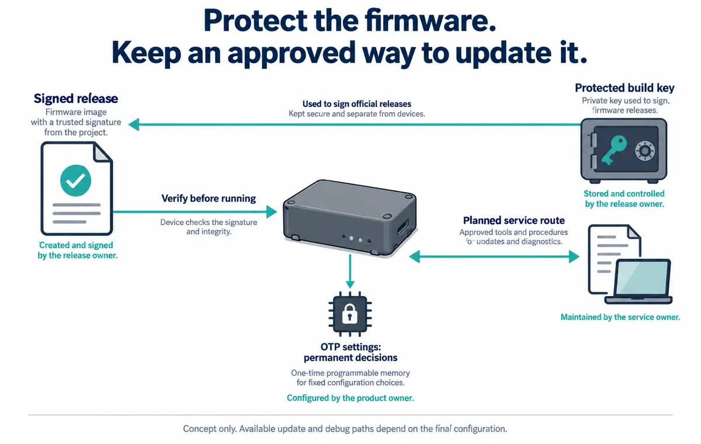

Your connected prototype is nearly ready to leave the workshop. Someone suggests enabling secure boot so it will only run approved firmware. That can be a useful protection, but it raises a practical question: when a user returns the device with a failed update, how will your team get it working again?
For a small team preparing its first trial units, firmware protection and future service belong in the same plan. Decide who can issue an update, how a device accepts it, and what remains possible when the normal application will not start. A successful programming session answers only part of that.
The RP2350's one-time programmable memory and boot process make a useful example. Below, we use them to decide what to verify before making permanent configuration changes.

Be clear about what you want to protect
Start with the concern in ordinary language. Are you preventing unauthorised firmware from running, protecting confidential code, or controlling service access? These goals are related, but they are not the same feature. Raspberry Pi's RP2350 security whitepaper, released November 20, 2025, distinguishes signed boot, encrypted boot and isolation between trusted and untrusted software.
For an application running MicroPython, include the interpreter, application files and console in that conversation. Ask what protects each one and how an authorised person changes it. The presence of a signed binary should not end the review of the software the product actually runs.
Also record which chip revision is fitted. In a September 18, 2026 manufacturer update, Raspberry Pi described laboratory research that re-enabled debug access on an RP2350-A4 using a destructive physical attack. That is not evidence of an ordinary remote compromise. It is a current reminder to define the access and equipment your protection needs to withstand, rather than describing a device as simply “unhackable.”
Treat permanent settings differently from a firmware file
The RP2350 stores security configuration in OTP: one-time programmable memory. Programming its bits is irreversible; it is not another file you can restore from a backup. The official whitepaper also distinguishes permanent permission locks from locks that last until reset. Copying a configuration without understanding that distinction can leave the next engineer with fewer options than expected.
Before provisioning trial units, write down the intended end state. Which firmware is accepted? Which debug and boot interfaces remain available? What update route is expected to survive? Who controls the signing material? Keep that record separate from secret key contents; a general handover document does not need to contain the private keys.
Use an engineering unit for the complete procedure first. Keep an unmodified development unit available for ordinary debugging, and identify which device is in which state. This prevents a locked test unit from being mistaken for a blank board during a later repair attempt.
Check the result on the device
A configuration screen showing a selected option is not enough. In a pico-fido discussion opened December 2, 2025, a user reported selecting secure-boot settings but still being able to run an unsigned test image. Later comments discussed a possible software fix; the visible thread does not provide a confirmed retest. The useful lesson is the user's verification step, not a claim about every current release.
A Chinese-language issue dated January 12, 2026 describes a related difficulty: a configuration tool could not read the secure-boot state. An unreadable status should remain an unknown in the handover, rather than being recorded as “enabled.” These are separate project reports, not tests we performed.
Plan both acceptance and rejection checks. An approved new version should run. An image outside the chosen policy should not run. The team should also know what happens after an interrupted update and which service operations remain possible. Define the expected result first, then record the observed result on the final configuration.
Recovery must work under the policy you will actually ship
A recovery demonstration performed before locking is not a demonstration of recovery afterwards. Repeat it with the intended restrictions in place on the engineering unit. Include the failure your users might encounter—for example, losing power during an update—and document whether recovery is automatic, requires a service tool, or requires replacing the board.
If you prevent older firmware from running, the familiar instruction “install the previous working version” may no longer be valid. Agree on an allowed recovery image and version policy. The person supporting the product should be able to identify both the running build and the update they are authorised to install, without guessing from filenames.
The handover should name a release owner and a service owner, even if they are initially the same person. Keep the approved build process and access to signing material under deliberate control. Test that the team can create and deliver a subsequent allowed release; retaining one working image is not the same as retaining the ability to fix it.
The outcome is a clear decision before the trial batch: the selected protections have a stated purpose, their actual state has been checked, and the remaining update and service route has been demonstrated. Anything not yet tested stays on the engineering list. A lock icon in a tool should not become the final evidence.
If you are preparing a prototype for users and need to coordinate firmware, access and service requirements, discuss the integration handover with Anvol. Bring the board revision, software build and proposed update route. Specialist security validation may need its own scope; this planning article is not a certification or a completed security assessment.
The illustration is a new explanatory concept. Public references checked October 10, 2026; no device was provisioned or locked for this article.